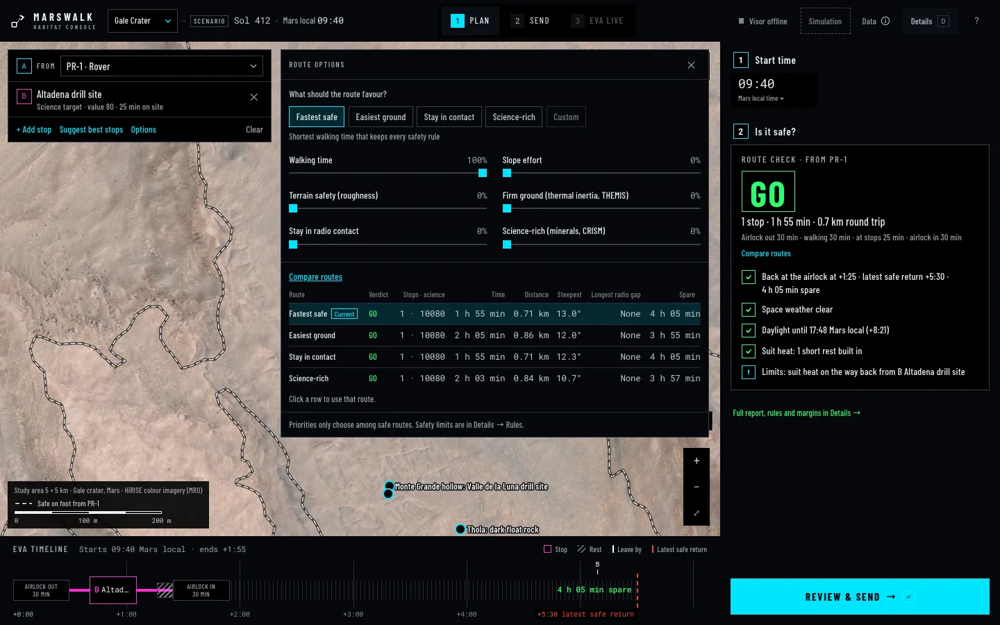
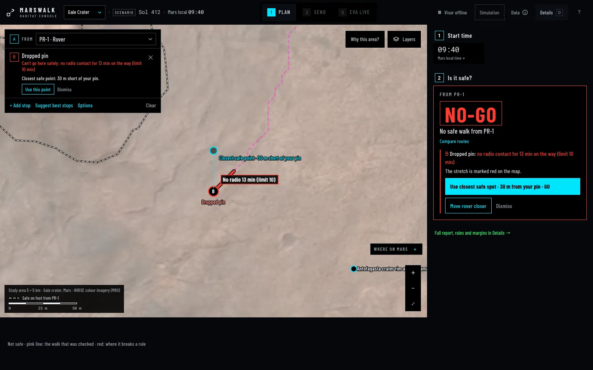

Habitat console
Plan it like a map.
The EVA officer picks a start (the habitat or the pressurized rover) and the places to visit, Google-Maps style. Marswalk answers GO or NO-GO, with the reason and the exact stretch where it fails.
- 1 m terrain model of Gale crater
- Ways forward: closest safe point, move rover, start from rover
- Timeline with latest safe return

